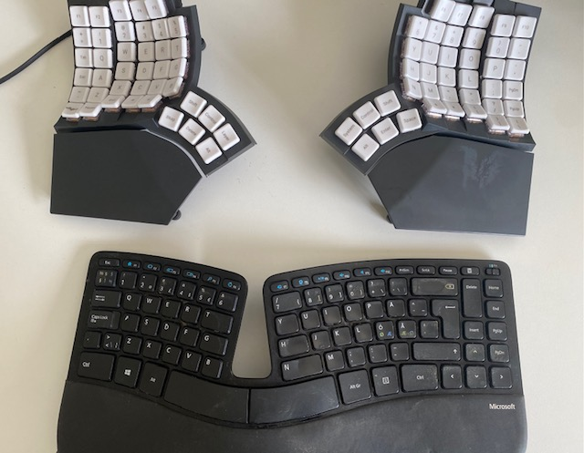
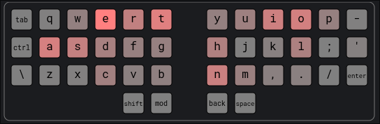
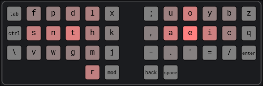
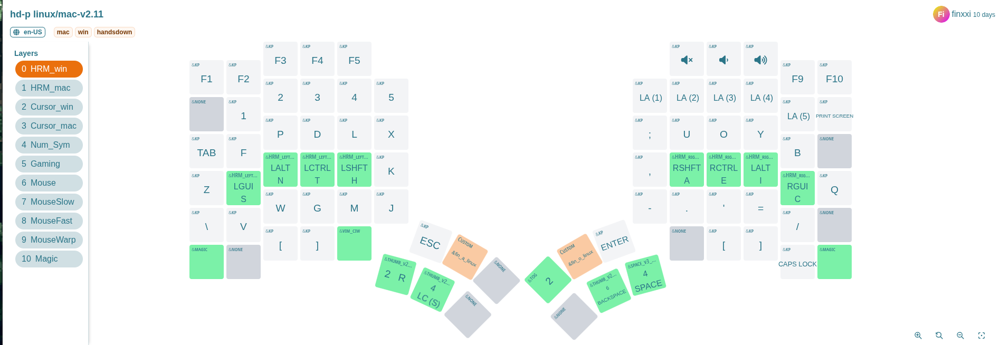

Introduction
Hi there! I am Xi, a freelancer software engineer in Finland.
How to read
I love reading with a dark color theme. You can change themes by clicking the paint brush icon () in the top-left menu bar.
Need to find something specific? Press the search icon () or hit the S key on the keyboard to open an input box. As you
type, matching content appears instantly.
Thanks for your time!
Coding
Rust
Trait
Traits
Types in Rust are powerful and versatile. Traits define shared behavior that multiple types can implement.
Default implementations
Traits in Rust are similar to interfaces in other languages but can also provide default implementations for methods.
Typically, an interface defines method signatures without any implementation. In Rust, however, you can supply default method implementations directly within a trait.
Hover over the code below and click “ “ to execute and see the result.
trait Greet {
fn greet(&self) { // Default implementation
println!("Hello from the default greeting!");
}
}
struct Person;
impl Greet for Person {} // Uses the default implementation
fn main() {
let person = Person;
person.greet(); // Outputs: Hello from the default greeting!
}We can, of course, override this default behavior like so:
trait Greet {
fn greet(&self) {
println!("Hello from the default greeting!");
}
}
struct Person;
// --snip--
impl Greet for Person {
fn greet(&self) { // Overwrite the default implementation
println!("Hello from Person greeting!");
}
}
fn main() {
let person = Person;
person.greet(); // Outputs: Hello from Person greeting!
}Traits as Function Parameters and Return Types
Once the Greet trait is defined, it can be used as a type for function parameters and return values:
fn main() {
let person = Person;
do_greet(person);
let returned = return_greet();
returned.greet();
}
fn do_greet(greetable: impl Greet) { // Accepts any type implementing Greet
greetable.greet();
}
fn return_greet() -> impl Greet { // Returns some type implementing Greet
Person
}
// --snip--
struct Person;
impl Greet for Person {}
trait Greet {
fn greet(&self) {
println!("Hello, greeting!");
}
}
When reading more and more Rust code, we see that experienced Rust developers frequently use standard library traits. Rust provides common traits as both guidelines and best practices. This not only helps us learn Rust but also provide great references when programming in other languages.
In the following section, let’s have a look at the out-of-box common traits!
Common Traits
Let’s briefly explore some standard library traits to understand their practical use.
- Debug
- Display
- Default
- Clone
- Copy
- From/Into
- Eq and PartialEq
- Ord and PartialOrd
These traits enable a rich set of tools that work seamlessly across many types. Let’s look at a few examples to illustrate their usefulness.
Debug
When we build a custom struct, like the Point below, we’d often like to
display the content to the users. If we println! as below, it doesn’t work.
Click the “run” button in the code below and see what the compiler tells.
struct Point {
x: i32,
y: i32,
}
fn main() {
let origin = Point { x: 0, y: 0 };
println!("{}", origin); // not work
}The compiler error implies that the Point needs to implement std::fmt::Display in
order for the line println!("{}", origin) to execute. We will discuss
Display trait in a minute. Now, we’d like to check the more common trait
Debug.
The Debug trait enables us to inspect the content by by allowing types to be
printed using the {:?} formatter in macros like println!.
#[derive(Debug)]
struct Point {
x: i32,
y: i32,
}
fn main() {
let origin = Point { x: 0, y: 0 };
println!("{:?}", origin); // Output: Point { x: 0, y: 0 }As shown in the 1st line, the easist way to implement Debug trait is to derive
it explicitly with #[derive(Debug)], and then {:?} works now!
Display
Now it’s Display. Unlike Debug, the Display trait is for user-facing output.
Implementing it requires us to define how the type should look when printed.
use std::fmt;
struct Point {
x: i32,
y: i32,
}
impl fmt::Display for Point {
fn fmt(&self, f: &mut fmt::Formatter) -> fmt::Result {
write!(f, "({}, {})", self.x, self.y)
}
}
fn main() {
let p = Point { x: 3, y: 4 };
println!("{}", p); // Output: (3, 4)
}
You might have noticed that there is no #[derive(Display)] here. This is
because Rust’s standard library doesn’t provide such a macro, but there are
external crate like derive_more to get
this functionality.
Speaking of Debug v.s. Display, if the type is meant to be readable by
users, implement Display. If it’s for developers, implement Debug. We can do
both.
Default
The Default trait defines what it means to create a “default” value of a type. It is often used when initializing structures with default configurations.
#[derive(Debug,Default)]
struct Config {
debug_mode: bool,
max_connections: u32,
}
fn main() {
let config = Config::default(); // All fields set to their default values
println!("{:?}", config); // Let's print the content out
}If you run the code above, the result is Config { debug_mode: false, max_connections: 0 }.
Let’s take a close look at the above code.
We have derived Debug in
order to prinln with {:?}. And we have also derived Default. Rust
allows us to derive Default because both of the two fields (bool and u32)
have implemented Default trait, with values false and 0 respectively.
Be aware that many Rust types do not implement Default. It is
only implemented when it makes sense to define a “reasonable default value”. For
example, std::fs::File. Opening or creating a file requires a path — no
default makes sense.
use std::fs::File;
#[derive(Debug, Default)]
struct Config {
debug_mode: bool,
max_connections: u32,
file: File, // compiler complains here
}
fn main() {
let config = Config::default();
println!("{:?}", config);
}Clone and Copy
From/Into
Eq and PartialEq
Ord and PartialOrd
Single Project to Workspace
As you build projects in Rust, it’s natural to start simple: a binary (src/main.rs) or a library (src/lib.rs) sitting neatly in a single Cargo project. But as your ideas grow, your project can benefit from a little more structure.
In this chapter, we’ll walk through the journey of evolving a simple Rust project into a workspace. We’ll see why you might want to do it, what changes are involved, and what benefits you gain along the way. If you’re curious about the “next step” in organizing your Rust code, this is for you!
The Starting Point: One Project, One Crate
Let’s imagine you begin with a simple library and binary combined in one project:
my-project/
|- Cargo.toml
|- src/
|- lib.rs
|- main.rs
The Cargo.toml declares both a library and a binary:
[package]
name = "my-project"
version = "0.1.0"
edition = "2021"
[dependencies]
[lib]
path = "src/lib.rs"
[[bin]]
name = "my-project"
path = "src/main.rs"
You don’t even need the [lib] and [[bin]] sections if you don’t overwrite
the default settings in the sample above as the name is identical to the project
name.
This works beautifully for small programs. You can define reusable code in
lib.rs, and build your CLI, server, or app in main.rs, calling into the library.
But what if you want to:
- Add another binary (e.g., a CLI tool and a server)?
- Create internal libraries that aren’t part of the public API?
You surely can still put all logic into the lib crate but how about separating concerns more cleanly across crates? That’s where workspaces shine!
Moving to a Workspace
A Cargo workspace is a way to manage multiple related crates together. Think of it like a “super-project” that coordinates building, testing, and managing dependencies across multiple packages.
Let’s transform our project step-by-step.
Create a Cargo.toml for the workspace
Move the existing Cargo.toml into a new my-project/ sub-folder. Then, create a top-level Cargo.toml:
[workspace]
members = [
"crates/my-project-lib",
"crates/my-project-cli",
]
The members list tells Cargo which packages belong to the workspace.
Split the code into crates
We’ll create two crates inside a new crates/ directory as implied in the above
workspace Cargo.toml.
my-project/
|- Cargo.toml (workspace)
|- crates/
|- my-project-lib/
|- Cargo.toml
|- src/
|- lib.rs
|- my-project-cli/
|- Cargo.toml
|- src/
|- main.rs
my-project-lib will hold the reusable library code, while my-project-cli will be
a binary crate depending on my-project-lib.
Update the crate dependencies
In crates/my-project-cli/Cargo.toml:
[package]
name = "my-project-cli"
version = "0.1.0"
edition = "2024"
[dependencies]
my-project-lib = { path = "../my-project-lib" }
Now your CLI crate can call into the library just like before. Spend some time
to put the code and tests into the corresponding crate. It’s a good brain
excercise, with the help of cargo build --workspace, to define the clear crate
bundary which might not be the case before.
Why Bother?
At first, moving to a workspace might feel like extra overhead. But it brings powerful benefits, even for relatively small projects:
- Clear Separation of Concerns: Each crate focuses on a specific task. Your codebase becomes easier to understand and maintain.
- Faster Builds: Cargo can rebuild only the crates that changed, rather than the entire project.
- Multiple Binaries: You can easily add more binaries (tools, servers, utilities) alongside your main app.
- Internal Libraries: Share code across multiple binaries without publishing it externally.
- Testing in Isolation: You can run cargo test per-crate to get faster, more focused feedback.
- Ready for Growth: When you eventually want to split parts into separate published crates (on crates.io) or keep internal libraries private, you’re already halfway there.
In short, workspaces help your project scale without becoming messy.
A Natural Evolution
You don’t have to start with a workspace when writing your first Rust project. But when your project grows just a little—adding a second binary, needing some internal shared code—workspaces offer a clean and powerful way to stay organized.
The best part? Moving to a workspace is an incremental change. You can migrate a project in stages, and Rust’s tooling (Cargo) makes it smooth.
If you’re curious, give it a try on your next project! You’ll gain both clarity and flexibility. In this small CLI project of mine: jirun, I have transferred it into workspace style to prepare for growing :)!
AI
Linear and Logistic Regression
This post summarizes my takeaways from the first chapter of the Machine Learning Specialization.
It covers the basics of linear regression, gradient descent, logistic regression, and the problem of overfitting. More importantly, I’ll focus on why we use these ideas, what they solve, and how they fit together.
Linear Regression
What it does?
Given historic data, it predicts new values (like house price, car mileage, or sales revenue). Instead of guessing outcomes, linear regression provides a systematic way to estimate them from data.
How to find the best fit LR model in practice?
There are two main challenges:
-
Choosing the right model form – deciding what features (and transformations of features) to include.
-
Finding the best parameters – estimating the weights associated with those features.
The second problem is straightforward. Algorithms like gradient descent can find the optimal parameters. Given a fixed model, this process is deterministic and guarantees the best weights.
The first problem is much harder. No algorithm can directly tell you the “correct” polynomial degree, transformations, or feature interactions. This is a model selection problem, not just an optimization one. It requires exploration and judgment.
Feature engineering is often considered an art because it involves:
- Domain expertise
- Experimentation
- Iterative refinement
- Human judgment
In this course, the focus is primarily on the second challenge, introducing Gradient Descent as a way to optimize parameters.
Gradient Descent, Loss Function, and Cost Function
- Loss function: The error for a single training example (“How wrong am I here?”).
- Cost function: The average error across the whole dataset (“How wrong am I overall?”).
Gradient descent works by repeatedly adjusting parameters to reduce the cost function.
Because gradient descent must loop through potentially millions (or billions) of features — especially in large-scale models like LLMs — computation speed becomes critical. This is why GPU acceleration plays a pivotal role in modern machine learning: it dramatically speeds up these large-scale calculations.
Logistic Regression (Classification)
What it does?
While linear regression predicts continuous values, logistic regression is used for classification tasks — predicting categories such as spam vs. not spam, disease vs. no disease, etc.
Instead of fitting a straight line, logistic regression uses the sigmoid function to squeeze predictions into a range between 0 and 1.
- Output: A probability. Example: 0.9 → very likely spam.
- Decision rule: If probability ≥ 0.5 → predict class 1, otherwise class 0.
Cost Function for Logistic Regression
Squared error (used in linear regression) doesn’t work well for classification because it doesn’t handle probabilities properly.
Instead, logistic regression uses log loss (cross-entropy loss):
- Penalizes confident but wrong predictions much more heavily.
- Rewards probabilities that better reflect reality.
This ensures the model doesn’t just guess classes, but actually learns meaningful probabilities.
Overfitting
When a model memorizes training data instead of learning general patterns. It performs great on training data but poorly on unseen data.
Common fixes:
- Add more data when possible
- Apply regularization (penalize overly complex models).
- Simplify the model structure (loop back to the first challenge mentioned earlier)
Final Thoughts
This chapter laid the groundwork for supervised learning:
- Linear regression for continuous values vs. logistic regression for categories.
- Gradient descent as the universal optimization method.
- Why the right cost function matters.
- How to spot and address overfitting early.
End-to-End Regression with scikit-learn (Numeric Features Only)
This chapter demonstrates a complete regression workflow using scikit-learn and the California Housing dataset. All features in this dataset are numeric, which allows us to focus on the core machine learning pipeline without introducing categorical preprocessing.
The goal is not to optimize performance aggressively, but to build a correct, leak-free, and reproducible workflow.
Load the Dataset
We load the California Housing dataset directly from scikit-learn.
It contains 8 numeric features and one numeric target variable, MedHouseVal.
data = fetch_california_housing(as_frame=True)
df = data.frame.copy()
target_col = "MedHouseVal"
df.head()
Train / Test Split
We split the dataset into training and test sets before any preprocessing. The test set is treated as hands-off until the final evaluation to prevent data leakage.
train_df, test_df = train_test_split(
df,
test_size=0.2,
random_state=42
)
train_df.shape, test_df.shape
Separate Features and Target
We separate input features (X) from the target variable (y) for both training and test data.
X_train = train_df.drop(columns=[target_col])
y_train = train_df[target_col].copy()
X_test = test_df.drop(columns=[target_col])
y_test = test_df[target_col].copy()
Numeric Feature Preprocessing
All features in this dataset are numeric. We explicitly list the numeric columns and define a preprocessing pipeline that:
- imputes missing values using the median
- standardizes features using
StandardScaler
num_cols = list(X_train.columns)
num_cols
numeric_pipeline = Pipeline(steps=[
("imputer", SimpleImputer(strategy="median")),
("scaler", StandardScaler()),
])
Build the Full Pipeline
We choose a RandomForestRegressor as the model and combine it with the preprocessing pipeline.
Keeping preprocessing and modeling inside a single pipeline ensures consistency across training and evaluation.
model = RandomForestRegressor(
n_estimators=300,
random_state=42,
n_jobs=-1
)
pipe = Pipeline(steps=[
("prep", numeric_pipeline),
("model", model),
])
print(pipe)
Cross-Validation on the Training Set
Before touching the test set, we estimate performance using 5-fold cross-validation on the training data. We use RMSE (Root Mean Squared Error) as the evaluation metric.
scores = cross_val_score(
pipe,
X_train,
y_train,
scoring="neg_root_mean_squared_error",
cv=5
)
rmse = -scores
rmse.mean(), rmse.std()
Final Evaluation on the Test Set
After cross-validation, we fit the pipeline on the full training set and evaluate once on the test set. This provides an unbiased estimate of generalization performance.
pipe.fit(X_train, y_train)
y_pred = pipe.predict(X_test)
test_rmse = root_mean_squared_error(y_test, y_pred)
test_rmse
Interpretation
The final test RMSE is approximately 0.50.
Since the target variable is measured in hundreds of thousands of dollars, this corresponds to an average prediction error of roughly $50,000.
This result is realistic for this dataset and confirms that the workflow is functioning correctly.
Summary
In this chapter we:
- split the data before preprocessing to avoid leakage
- built a numeric-only preprocessing pipeline
- combined preprocessing and modeling using
Pipeline - evaluated using cross-validation and a final test set
This structure serves as a clean foundation for future extensions, such as handling categorical features or experimenting with other models.
Reproducibility
- Python ≥ 3.10
- scikit-learn ≥ 1.6.1
- Fixed random seed (
random_state=42)
🔗 Full runnable notebook:
▶ Run this notebook on Google Colab
Inspecting the California Housing Dataset (Before Preprocessing)
Before any preprocessing or modeling, we should first understand the raw dataset: its structure, data types, missing values, and basic statistical properties. This step prevents silent bugs and informs correct preprocessing decisions later.
Load the Dataset
We download and load the California Housing dataset from Géron’s public repository. The dataset is cached locally to avoid repeated downloads.
from pathlib import Path
import pandas as pd
import tarfile
import urllib.request
def load_housing_data():
tarball_path = Path("datasets/housing.tgz")
if not tarball_path.is_file():
Path("datasets").mkdir(parents=True, exist_ok=True)
url = "https://github.com/ageron/data/raw/main/housing.tgz"
urllib.request.urlretrieve(url, tarball_path)
with tarfile.open(tarball_path) as housing_tarball:
housing_tarball.extractall(path="datasets", filter="data")
return pd.read_csv(Path("datasets/housing/housing.csv"))
housing_full = load_housing_data()
housing_full.shape, housing_full.head()
This gives us a first look at:
- dataset size (rows × columns)
- feature names
- rough value ranges
Dataset Structure and Data Types
We inspect column types and missing-value counts.
housing_full.info()
This step answers:
- which features are numeric vs categorical
- whether any columns have missing values
- whether dtypes are suitable for downstream pipelines
Descriptive Statistics (Numeric Features)
We compute summary statistics for numeric columns.
housing_full.describe()
From this, we can quickly spot:
- skewed distributions (mean vs median)
- extreme min/max values (potential outliers)
- scale differences across features
Categorical Feature Distribution
The dataset contains one categorical feature: ocean_proximity.
housing_full["ocean_proximity"].value_counts()
This reveals:
- category balance
- whether rare categories exist
- whether one-hot encoding is appropriate
Missing Value Analysis (Counts)
We check how many values are missing in each column.
housing_full.isna().sum().sort_values(ascending=False).head(20)
This helps decide:
- which features require imputation
- whether any columns might be dropped entirely
Missing Value Analysis (Ratios)
Absolute counts can be misleading, so we also inspect missing-value ratios.
housing_full.isna().mean().sort_values(ascending=False).head(20)
As a rule of thumb:
- features with very high missing ratios deserve scrutiny
- low ratios are usually safe for median or mode imputation
Correlation with Target Variable
We compute correlations for numeric features and focus on the target variable.
num_df = housing_full.select_dtypes(include="number")
corr = num_df.corr(numeric_only=True)
corr["median_house_value"].sort_values(ascending=False)
This provides a quick signal check:
- which features are strongly correlated with the target
- which features may be redundant or weak predictors
Correlation is not causation, but it is a useful early filter.
Summary
In this section we:
- inspected dataset shape and schema
- identified numeric and categorical features
- analyzed missing values
- examined basic statistical properties
- checked correlations with the target variable
With this understanding, we are now ready to design correct and informed preprocessing pipelines without guessing.
🔗 Full runnable notebook:
▶ Run this notebook on Google Colab
Others
My Ergonomic Keyboard Journey: From Sculpt to Glove80
2025-09-13
For years I used a regular keyboard until shoulder and hand tension pushed me to try something better. I switched to the Microsoft Sculpt, which served me well for several years. It was a big step up for comfort, but eventually I wanted to explore something even more ergonomic.
Choosing the Next Keyboard
I started comparing modern ergonomic split keyboards:
- Kinesis Advantage360 – classic reputation, but a bit pricey and bulky.
- Voyager – high-quality build, very compact, but too minimal key count for me.
- Moonlander – modern design, highly customizable.
- Glove80 – wireless, lightweight, with a distinctive curved key layout.
After weighing the pros and cons, I chose the Glove80. Looking back, I believe any of these would have been a massive improvement over my Microsoft Sculpt—let alone a standard laptop keyboard.
My Glove80 (top) and retired Sculpt (bottom).

Changing the Layout Too
At the same time, I took on another challenge: moving from QWERTY to the Hands Down layout. My motivation was better efficiency, less finger strain, and more natural hand movement.
There are more traditional alternatives like Dvorak and Colemak, but I chose the more modern and thumb-friendly Hands Down family—specifically the handsdown-promethium variant.
You can find more handsdown info here.
- Our most familiar QWERTY layout:

- My chosen handsdown-promethium layout:

So, not only did I have to adjust to a new keyboard shape, but also to a completely new key layout. Yes, it was brutal, painfully difficult at first.
That said, I’m very happy with handsdown-promethium. Honestly, I think almost any modern layout is a huge step up from QWERTY. This site provides useful statistics on different layouts to back that up. For example, QWERTY’s Total Word Effort is 2070.6 while handsdown-promethium is only 763.5.
Programmability and Practice
One of the Glove80’s best features is its programmability. I could remap keys, add layers, and customize shortcuts directly on the keyboard. These three features make it possible to tailor the keyboard to my workflow instead of forcing myself to adapt to it.

Layers
A layer is like having multiple keyboards in one. Your base layer handles normal typing, but with a single key press you can switch to another layer—for numbers, symbols, navigation, or anything else. On the Glove80, I set up separate layers for symbols, numbers, cursor movement, and even mouse control. With cursor keys and mouse emulation built in, I rarely reach for an actual mouse—especially when using a tiling window manager like Hyperland.
Home Row Mods (HRM)
Another powerful feature is Home Row Mods. With HRM, keys on the home row act as normal letters when tapped, but as modifiers (Ctrl, Alt, Shift, etc.) when held.
In my case, s, n, t, h on left hand and a, e, i, c on righe hand
are my modifiers as shown on the glove80-layouts screenshot above.
This means I don’t need to stretch my fingers awkwardly to reach modifier keys, reducing strain and speeding up key combos.
The Practice Phase
The first few weeks were slow. I had to retrain my muscle memory while learning both a new keyboard shape and a new layout. Daily practice on keybr.com was essential. Gradually, my typing speed and accuracy started to recover.
Integrating Into My Workflow
Once typing felt natural again, the next step was adapting my dotfiles and tools. For me, that especially meant reconfiguring Tmux and Neovim to fit the new layout. Even small adjustments made a big difference in keeping my workflow smooth and efficient.
One challenge of using a non-QWERTY layout is Vim’s navigation keys.
Traditionally, h, j, k, and l sit comfortably on the home row, making
them ideal for movement. On Handsdown-Promethium, however, these keys are no
longer in the same resting positions, so an alternative was needed.
My solution was to rely on the arrow keys in a dedicated cursor layer. On
the Glove80, they map neatly to the same physical positions as hjkl on a
standard keyboard, which makes the transition more natural. At the same time,
Handsdown-Promethium still places hjkl in reasonably accessible spots, so I
can fall back on them if I want.
This hybrid approach has worked well: I get the familiarity of Vim-style navigation without forcing my fingers into awkward positions.
Typing Demo
Here’s a 1.5-minute typing demo ~40 WPM (words per min) recorded on 13-09-2025.
Notes:
- The printed letters on the keycaps are QWERTY, so they don’t match my actual layout.
- Finger and hand movement is very minimal, which shows the ergonomic advantage.
Final Thoughts
Switching from the Sculpt to the Glove80—while also changing layouts—was not easy. The transition took multiple weeks of patience and practice.
But now, three months later, typing feels lighter, smoother, and more sustainable. I no longer feel the same tension in my shoulders and hands.
If you spend hours typing each day, investing in both an ergonomic keyboard and a better layout is worth it. The short-term pain pays off in long-term comfort and efficiency.
Salesforce Developer Training
This training aims to coach general software engineering skills for Salesforce developers so they can deal with large solutions in the long run.
The Issue it solves
Salesforce platform is a sizable business investment. However, many solutions deteriorate after the first several years.
New features take too long to publish, bugs appear here and there. This issue is actively discussed on LinkedIn: video1, video2
It won’t fix the problem by throwing more developers or testers. On the contrary, a small dev team with the right software engineering skills can manage large solutions.
Content
This training aims to coach the essential software engineering skills for your development team.
The training is one or two days, and include subjects like:
- Clean code concept
- Object Oriented mindset
- Separation of concerns concept
- Unit testing practice and tooling
- Refactoring code
- Salesforce modularization
- Salesforce DevOps
After the training the participants will be able to:
- Understand how to structure the code
- Understand and use clean code concept in work
- Create Object Oriented code in Apex
- Know what is unit testing and how it helps code refactoring
- Know cutting-edge Salesforce 2nd gen package and modularization
- Modern DevOps tools in Salesforce
Requirement
This training requires active participation in discussions and frequent small hands-on Apex programming exercises.
This training can be customized according the your dev team skill level. Follow up and feedback sessions after the training are also highly recommended
To book the training, contact me at tdxiaoxi2@gmail.com.
Thanks for your time!